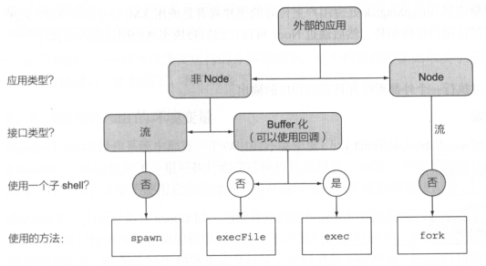

Node 技巧笔记7 - child_process
任何一个平台都不是孤立的，在Node中，child_process模块允许在Node程序中执行一些外部程序，如Java、shell、PHP等（也包括其他利用Node开发的应用），这样能避免重复造轮子。
child_process模块提供四种不同的方法来执行外部程序，分别是：
- execFile 执行外部程序，需提供一组参数，以及一个在进程退出后的缓存输出的回调
- spawn 执行外部程序，需提供一组参数，以及一个在进程退出后的输入输出和事件的数据流接口
- exec 在一个命令行窗口中执行一个或多个命令，以及一个在进程退出后缓冲输出的回调
- fork 在一个独立的进程中执行一个Node模块，需要提供一组参数，以及一个类似spawn方法里的数据流和事件式的接口，同时设置好父进程和子进程之间的通信
选择时的考虑如下：

这些方法都是异步的,其有对应的同步版本，分别是execFileSync、spawnSync、execSync。在同步中用try-catch捕获异常。
技巧56 执行外部程序
若想要运行一个外部程序，然后获取其输出结果，那么使用execFile方法是最直接的方式，它会将输出结果自动缓存，并且通过一个回调函数返回最后的结果或异常信息。
以一个脚本命令为例，test.js的内容如下：console.log(111);1
2
3
4
5
6
7
8
9const cp = require('child_process');
// 第一个参数是程序命名名，第二个参数为数组类型，表示命令的输入
cp.execFile('node', ['test.js'], (err, stdout, stderr) => {
if(err) console.error(err);
console.log(`stdout: ${stdout}`);
console.log(`stderr: ${stderr}`);
});
外部程序的执行都需要一个执行路径，否则是无法找到对应的可执行文件的。Node通过PATH环境变量找到需要执行的外部程序，若程序的路径在PATH中，那么则可以不使用路径。
若调用的外部程序不存在，则可能遇到 ENOENT 错误，通常是由于输入的的程序的可执行文件名或路径错误导致的。除了找不到可执行文件，还有可能是由于无权限，此时将遇到 EACCES 或 EPERM 错误。
当被调用执行的外部程序退出返回的状态码非零时，则表示该程序不能在当前环境下执行。此时Node会将该返回的状态码作为异常对象和其他一切可能返回的数据传入到stdout和stderr中。其中的状态码code保存在err对象中。
技巧57 流和外部程序
若有一个Web应用，其需要使用外部程序的输出，当外部程序输出的数据可用时，此时可以选择马上将数据输出到客户端，通过流、可以使用正通过子进程输出的数据，相反，而不是等到将所有数据缓存好之后再将其输出。
这样一来，对于调用一个可能有大数据量输出的外部应用，流就是非常好的选择，使用流可以提高数据的响应效率。
spawn方法和execFile类似，但spawn方法依赖流。1
2
3
4
5
6const cp = require('child_process');
let child = cp.spawn('node', ['test.js']);
child.on('error', console.error);
child.stdout.pipe(process.stdout);
child.stderr.pipe(process.stderr);
而且由于spawn基于流，所以可以将多个spawn方法串联使用。在UNIX系统下，cat命令用来读取一个文件，并且输出其内容，然后使用sort命令将前面的输出作为新的输入，对内容排序后再输出，最后uniq命令接收sort的输出将重复行删除。1
2
3
4
5
6
7
8
9const cp = require('child_process');
let cat = cp.spawn('cat', ['messy.txt']);
let sort = cp.spawn('sort');
let uniq = cp.spawn('uniq');
cat.stdout.pipe(sort.stdin);
sort.stdout.pipe(uniq.stdin);
uniq.stdout.pipe(process.stdout);
其中messy.txt内容如下：1
2
3
4
5
6
7Apple
Box
Race
Choose
Borard
Borard
Dash
技巧58 在shell中执行命令
Shell编程是构建工具类脚本和命令行程序的最常见方式。当想要通过一些系统已有的基础命令（如管道、重定向、大对象文件相关命令）得到结果时，就可以使用exec方法。
如下方式得到的结果和上面使用spawn的结果一样。1
2
3
4
5const cp = require('child_process');
cp.exec('cat messy.txt | sort | uniq', (err, stdout, stdin) => {
console.log(stdout);
})
直接对命令进行解析并执行的能力非常方便，而且非常强大，但此时需要注意，你需要对输入进行过滤，防止执行一些危险的命令，如;rm -rf /;这样的命令，也就是需要防范代码恶意注入，此时最好使用execFile，其不会直接解析命令执行。
技巧59 分离子进程
一般来说，通过Node打开一个外部程序，然后让其独立运行，非常有用。比如Node需要运行一个长时间运行的外部进程，并且在其运行后，Node不需要对其进行管理，类似打开一个后台同步上传的应用，当关闭Node后，其依然能继续同步上传。当Node主程序意外崩溃时，独立外部进程不会受影响。
正常情况下，当父进程结束时，所有子进程都会被终结，因为子进程被认为是附加到父进程上的，但spawn方法可以做到分离一个子进程，从而时子进程和父进程一样的独立运行。
具体是操作方式为使用detached配置选项。1
let child = cp.spawn('./longrun', [], {detached: true});
中断I/O
在将子进程独立运行后，此时即使父进程什么都不做，父进程也是活跃状态的，指导子进程终结，因为子进程的I/O和父进程是相互连接的，此时可以配置stdio来中断I/O。
stdio选项定义了子进程的I/O连接位置，其值类型可以是字符串，也可以是数组，字符串参数是为了简便，最后会被改写为数组。默认stdio的配置为：stdio: 'pipe', 改写为数组形式为：stdio: ['pipe','pipe','pipe']
这个数组的结构顺序需要特别注意，其元素位置对应特定的子进程的文件描述符所指向的I/O。其中0~2号文件解析器都可以在子进程中作为流（child.stdio[0]、child.stdio[1]、child.stdio[2]）同时，0~2号的文件描述符分别对应stdin、stdout、stderr，所以等价于child.stdin、child.stdout、child.stderr。如此，stdio的值pipe就连接了父进程和子进程，并随时待命。
中断一个连接可以使用destroy方法，例如child.stdin.destroy()。但最好的方式就是一开始就不创建这些流，所以也可以使用ignore放弃使用这个流或者直接将其文件描述符赋值指向其他地方。
如下，将子进程和父进程的I/O中断掉，同时为stdout和stderr指定了日志文件1
2
3
4
5
6
7
8
9
10
11
12
13const fs = require('fs');
const cp = require('child_process');
// 打开两个日志文件，分别用于stdout和stderr的流的地址
let outFd = fs.openSync('./longrun.out.log', 'a');
let errFd = fs.openSync('./longrun.err.log', 'a');
let child = cp.spawn('./longrun', [], {
detached: true,
stdio: ['ignore', outFd, errFd] // 将第一个stdin忽略
});
// child.unref(); 打开注释，则关闭引用计数
引用计数
由于子进程会继续存在，尽管其被分离了并且和父进程的I/O也中断了，但父进程仍然会有一个对子进程的内部引用，并且只要父进程没有终结且这个引用没有被移除，父进程就不会终结。
通过child.unref()方法来关闭对子进程的引用计数，
技巧61 Fork Node模块
在处理大数据量计算的任务时，web worker为浏览器和JS提供了一种脱离主线程的方式，可以通过使用内置的message事件进行交互。类似的，Node中可通过fork命令创建独立进程，同时在父进程和子进程间创建一个IPC通信通道。
使用fork方法创建的IPC通道，在子进程中，其会暴露出process.on('message')和process.send()用来接收和发送消息。1
2
3process.on('message', msg => { // 当子进程收到消息时，此回调被被调用
process.send(msg); // 将消息原样发给父进程
})
父进程这边则使用child.on('message')和child.send()方法。1
2
3
4
5
6
7
8
9const cp = require('child_process');
let child = cp.fork('./child');
child.on('message', msg => { // 当父进程收到消息时，此回调被被调用
console.log(`got message from child: ${msg}`); // 将子进程给的消息打印出来
});
child.send('sending a msg to child'); // 发送一个消息给子进程。
进程间的通信的数据格式不会被自动转换，即发送的JSON值在接收时仍然是JSON值。
由于打开了父进程和子进程间的IPC通道，只要子进程不中断，父进程也会保持活跃状态，若需要中断IPC通道，则可以在父进程中调用disconnect方法：child.disconnect()。
技巧62 运行作业
通过fork内置的IPC通道，父进程将处理计算量大的作业分配给子进程，同时父进程需要获取返回的结果。1
2
3
4
5
6
7
8
9
10
11
12
13
14
15
16
17
18
19
20
21
22
23
24
25const cp = require('child_process');
function doWork(job, cb) {
let child = cp.fork('./worker');
let cbTriggered = false; // 防止回调多次运行
child.once('message', rst => { // 期待子进程返回的结果
cb(null, rst);
cbTriggered = true;
})
.once('error', err => {
// 子进程可能会运行错误或因为其他原因退出，此时需要监听错误事件
if(!cbTriggered){
cb(err);
cbTriggered = true;
}
child.kill(); // 当异常发生时，在不可用时杀死进程
})
.once('exit', (code, signal) => {
if(!cbTriggered)
cb(new Error(`child exited with code: ${code}`));
});
child.send(job); // 将作业发送给子进程
}
上面的doWork函数在每次需要执行工作时都创建新的子进程，而创建的子进程不能太多，不仅仅是因为创建新进程需要内存开销，其还需要启动时间。
当需要频繁运行一个例行的计算作业任务时，每次都立即fork进程将会耗尽CPU资源，最好的方法是构建一个可用的作业池，在池中可以存有足够多的进程并且可以随时等待分配使用。
所以现在需要一个模块来创建工作池：
- 根据机器的CPU数量来尽可能fork多的工作进程
- 确保一个新的任务可以拿到一个可用的进程，而不是抢占已使用的进程
- 当没有工作进程空闲时，维护一个工作队列，当有工作进程时，排队处理
- 按需fork进程
1 | // pooler模块 |
用于模拟高负荷任务的 worker：1
2
3
4
5
6// worker内容
process.on('message', job => {
for(let i = 0; i < 100000000; i++);
process.send(`finished: ${job}`);
})
测试 pooler 和 worker1
2
3
4
5
6
7
8
9
10
11const http = require('http');
const pooler = require('./pooler');
const worker = require('./worker');
http.createServer((req, res) => {
pooler(worker, (err, data) => {
if(err) return res.end(`got error: ${err.message}`);
res.send(data);
});
}).listen(3000);